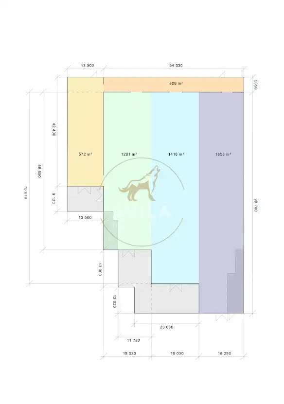
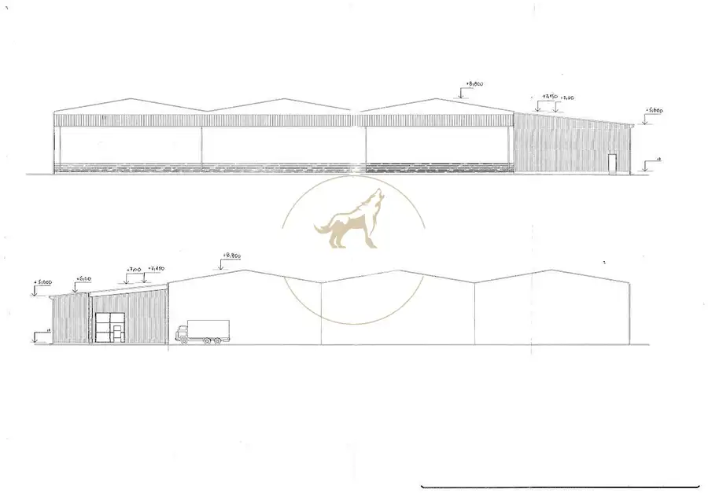
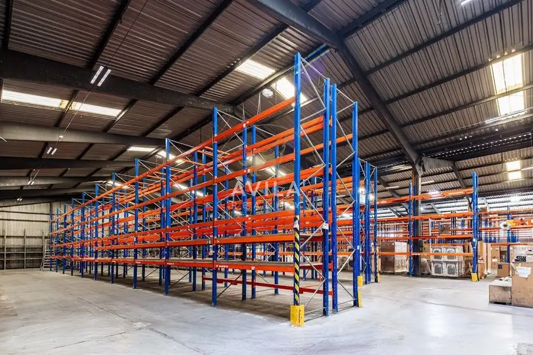
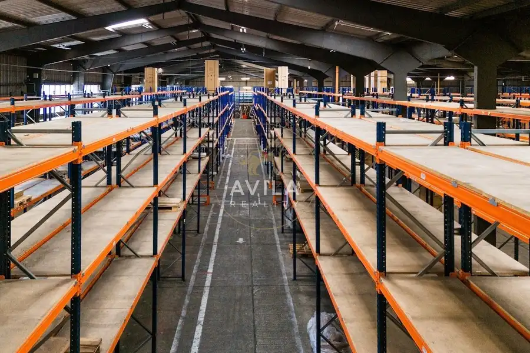
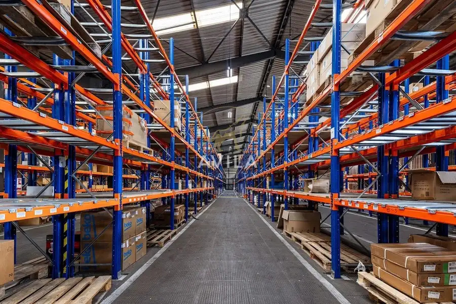
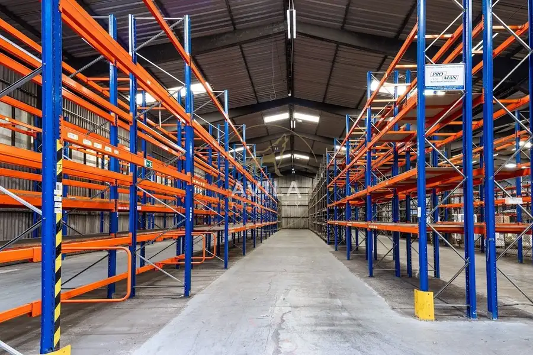
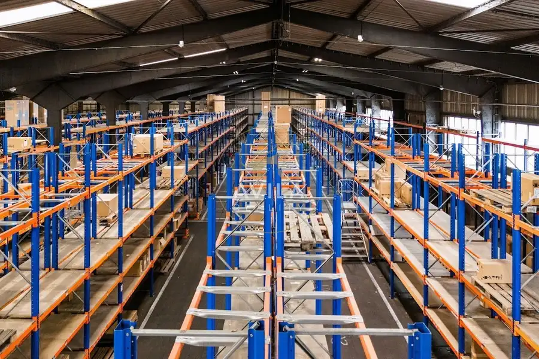
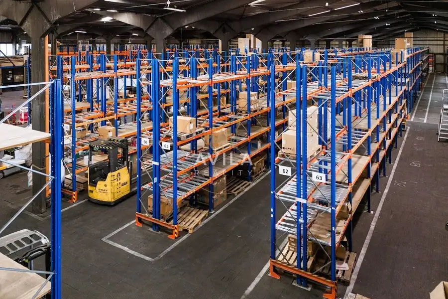

Na prenájom: Rozsiahla skladová hala 5 164 m² v priemyselnej zóne Madunice / Veľké Kostoľany (pri D1)
Madunice









- Plocha5164 m²
- StavČiastočná rekonštrukcia
O nehnuteľnosti
Na prenájom veľká a funkčne riešená skladová hala v etablovanej priemyselnej zóne Madunice / Veľké Kostoľany. Lokalita sa nachádza medzi Trnavou a Piešťanmi, len niekoľko minút od diaľnice D1, čo zabezpečuje výbornú dostupnosť pre logistiku a distribúciu v rámci západného Slovenska.Priestor je vhodný pre spoločnosti pôsobiace v oblasti skladovania, logistiky, distribúcie, e-commerce. Hala ponúka flexibilitu, veľkorysé manipulačné plochy a možnosť prispôsobenia podľa potrieb nájomcu.1. Hlavné parametre nehnuteľnosti:-Celková plocha haly: 5 164 m²-Svetlá výška: 5,5 – 8,8 m-Spevnené plochy: 3 405 m² (manipulácia a parkovanie pre LKW)-Prístrešky: 521 m² + 124 m²-Zázemie / kancelárie: vstavky 123 m² + 129 m² (kancelárie, sociálne priestory)-Možnosť prenájmu celku alebo rozdelenia až na 4 samostatné časti-Dostupné ihneď-Možnosť krátkodobého prenájmu (buffer sklad)-Bezproblémový prístup pre kamióny a veľké súpravyHala je konštrukčne riešená ako oceľová stavba s opláštením, čo zabezpečuje stabilitu, nízku údržbu a variabilitu využitia. Objekt pozostáva z troch hlavných lodí, doplnených o bočnú a zadnú prístavbu, čo umožňuje efektívne rozdelenie prevádzky.2. Regálový systém a vnútorné vybavenieJednou z hlavných výhod je osadený paletový regálový systém s kapacitou približne 4 000 paletových miest (v závislosti od nastavenia úrovní).Ďalšie vybavenie:-Veľkorysé manipulačné priestory medzi regálmi-Kvalitné denné presvetlenie + umelé osvetlenie-Kamerový systém-Možnosť dispozičných úprav podľa potrieb nájomcu-Vhodné pre vysokozdvižnú techniku a intenzívnu logistickú prevádzku3. Exteriér a prístup-Rozsiahle spevnené plochy 3 405 m² vhodné na manipuláciu, parkovanie a pohyb kamiónov-Prístrešky pre logistiku (521 m² + 124 m²)-Výborné manévrovacie možnosti pre LKW-Bezproblémový prístup z hlavnej komunikácie4. LokalitaPriemyselná zóna Madunice / Veľké Kostoľany je dlhodobo etablovaná a využívaná logistickými a výrobnými spoločnosťami.V bezprostrednom susedstve sa nachádzajú logistické centrá VVISS a HOPI Logistics, čo potvrdzuje strategický význam lokality.Výborné napojenie na:-D1 (Trnava – Piešťany – Trenčín)-R1 (Nitra – Banská Bystrica)-Hlavné dopravné ťahy západného Slovenska5. Cena a podmienky prenájmuCenové podmienky sú flexibilné a odvíjajú sa od dĺžky nájmu, požadovanej plochy a využitia regálového systému.Radi pripravíme individuálnu cenovú ponuku podľa vašich potrieb.Cena: dohodouPre viac informácií a dohodnutie obhliadky kontaktujte:Andrej PakanTel.: 0908 118913andrej.pakan@avilareality.skČo všetko je zahrnuté v našej provízii:kompletný právny servis (rezervačná, kúpna, nájomná zmluva)overenie podpisov u notára a katasterbezpečný prevod peňazí (notárska alebo vinkulačná úschova)poradenstvo a pomoc s hypotekárnym financovanímprofesionálna prezentácia a marketing nehnuteľnostiosobný servis makléra od prvej obhliadky až po odovzdanie kľúčovKto smeAVILA je členom SORA – Slovenskej asociácie realitných kancelárií.Dodržiavame etický kódex, pravidelne sa vzdelávame a garantujeme férový a bezpečný priebeh každého obchodu.Sme AVILA. Zavolajte nám a dohodnite si obhliadku – možno už zajtra budete bližšie k svojmu novému domovu.
Parametre
- Bezpečnosť
- Kamerový systém
- Druh
- Skladový objekt
- Dátum zverejnenia
- 21. 01. 2026
- Elektrina
- Na pozemku - 230 V
- Energetický certifikát budovy
- nie je
- Odpadové vody
- Na pozemku - Kanalizácia
- Plocha pozemku
- 9991 m²
- Plyn
- Nedostupné
- Počet nadzemných podlaží
- 1
- Prístupová komunikácia
- Asfaltová
- Rok výstavby
- 2010
- Stav nehnuteľnosti
- Čiastočná rekonštrukcia
- Typ
- Prenájom
- Typ konštrukcie
- Zmiešaná
- Voda
- Na pozemku - Diaľkový vodovod
- Vybavenie
- Zabezpečovacie zariadenie, Vyhradené parkovanie, Sklad
- Vybavenie objektu
- Štandardné
- Výška budovy
- 9
- Zastavaná plocha
- 5812 m²
- Úžitková plocha
- 5164 m²
Kde to je


Mohlo by Vás zaujímať
 DomNové
249 000 €AVILA-Kompletne zrekonštruovaný rodinný dom v Dolnom Srní – pokojná lokalita, kvalitná stavba, moderné vybavenie
Dolné Srnie
240 m²
DomNové
249 000 €AVILA-Kompletne zrekonštruovaný rodinný dom v Dolnom Srní – pokojná lokalita, kvalitná stavba, moderné vybavenie
Dolné Srnie
240 m²
 BytNové
80 300 €AVILA- 1 izbový byt v novostavbe, parkovacie miesto
Nové Mesto nad Váhom
1-izbový36.5 m²2. podlažie
BytNové
80 300 €AVILA- 1 izbový byt v novostavbe, parkovacie miesto
Nové Mesto nad Váhom
1-izbový36.5 m²2. podlažie
 BytNové
Cena na vyžádáníAVILA-prvé skolaudované 1, 2 a 3 izbové byty odovzdané, parkovacie miesto
Lubina
2-izbový75 m²1. podlažie
BytNové
Cena na vyžádáníAVILA-prvé skolaudované 1, 2 a 3 izbové byty odovzdané, parkovacie miesto
Lubina
2-izbový75 m²1. podlažie